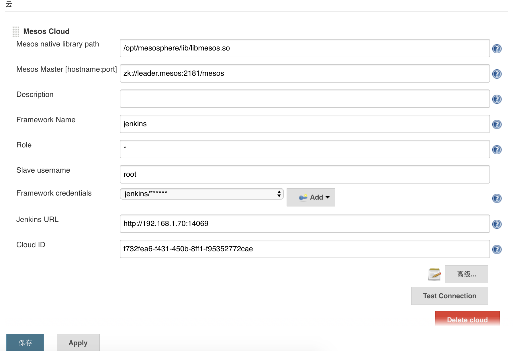
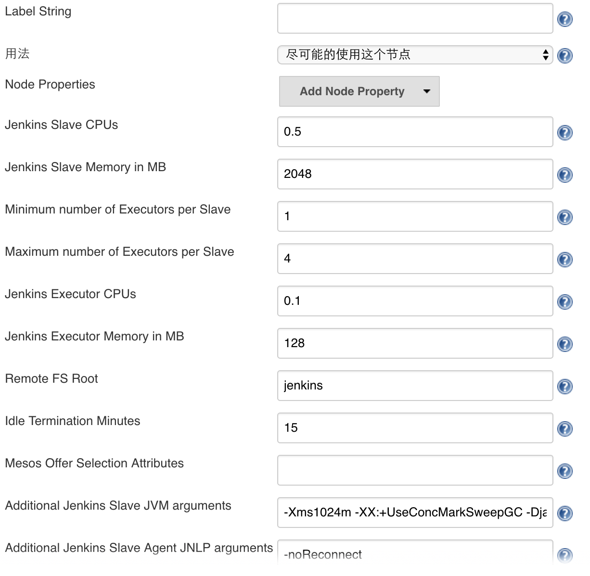
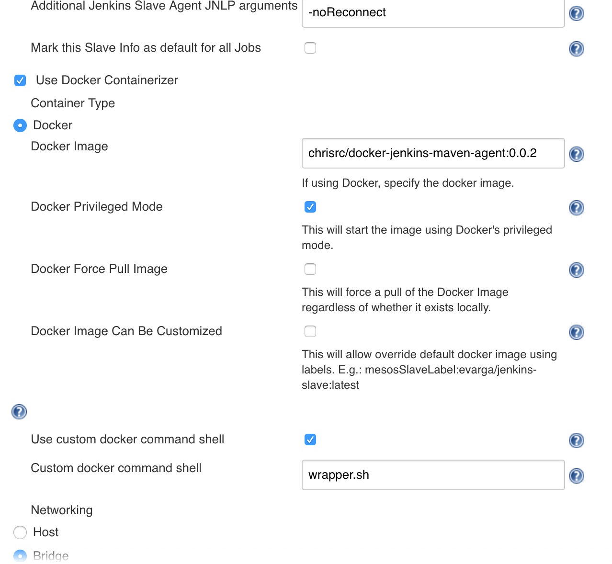
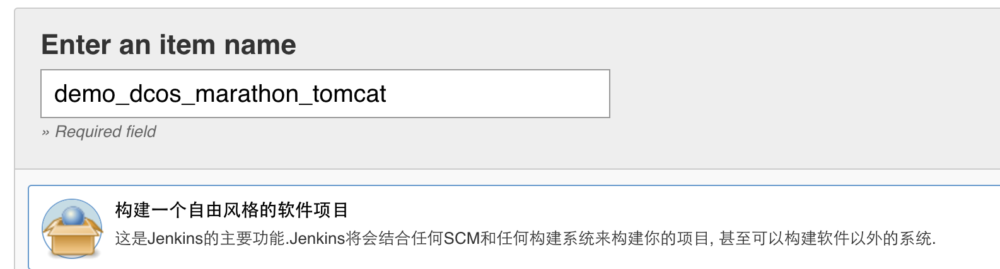
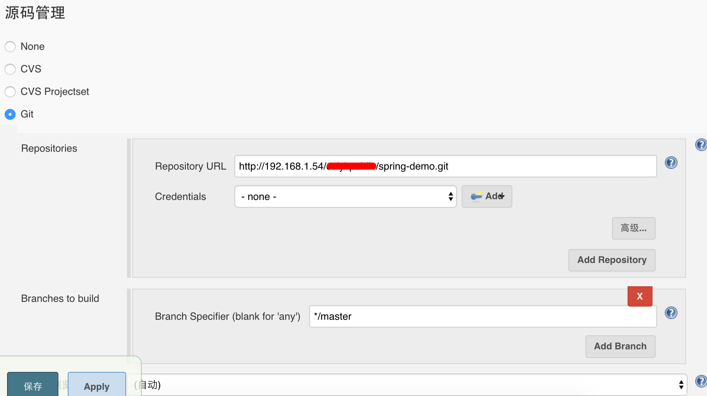
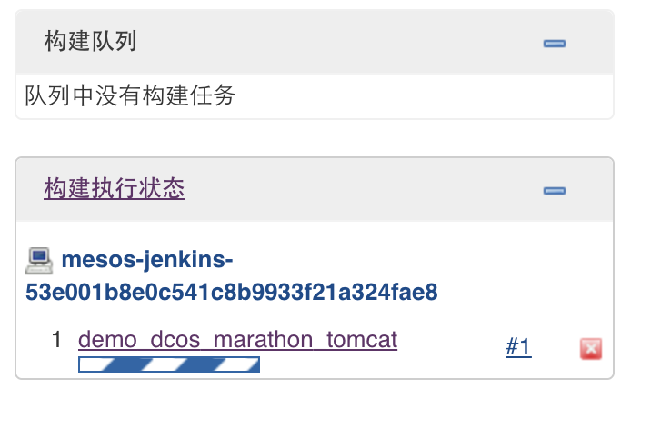
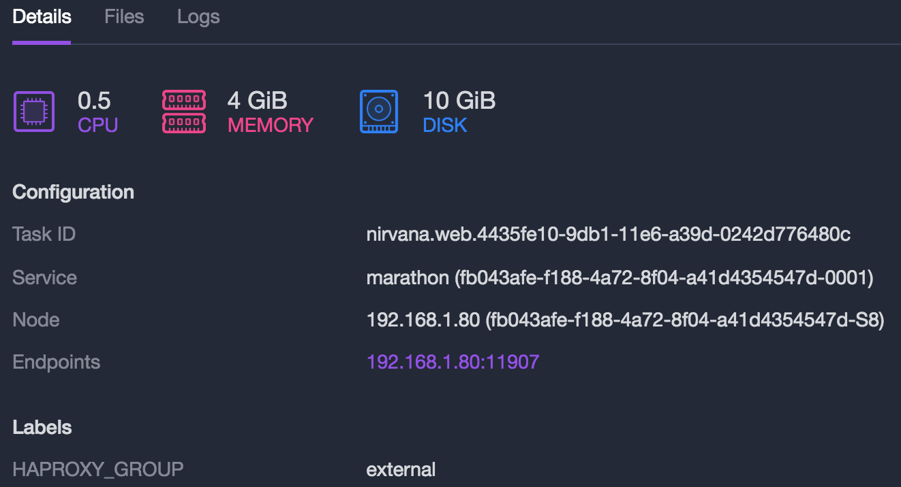
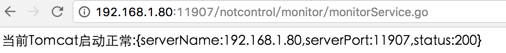
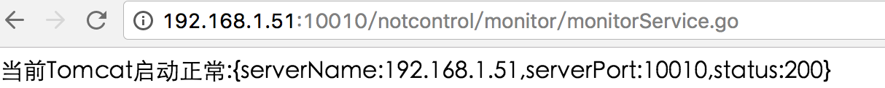

示例：在Jenkins on DCOS上编译部署Tomcat应用
1.准备工作
Tomcat下载地址
http://mirrors.aliyun.com/apache/tomcat/tomcat-8/v8.5.6/bin/apache-tomcat-8.5.6.tar.gz
War下载地址（本地Nexus仓库）
http://192.168.1.54:8081/nexus/content/repositories/releases/com/example/example/1.0/example-1.0.war
定义marathon服务配置
方案一：直接由marathon启动tomcat并部署war
定义如下json设置，并保存到app.json
{
"id": "tomcat",
"cmd": "mv *.war apache-tomcat-*/webapps && cd apache-tomcat-* && sed \"s/8080/$PORT/g\" < ./conf/server.xml > ./conf/server-mesos.xml && ./bin/catalina.sh run -config ./conf/server-mesos.xml",
"mem": 512,
"cpus": 1.0,
"disk": 4096,
"instances": 1,
"uris": [
"http://mirrors.aliyun.com/apache/tomcat/tomcat-8/v8.5.6/bin/apache-tomcat-8.5.6.tar.gz",
"http://192.168.1.54:8081/nexus/content/repositories/releases/com/example/example/1.0/example-1.0.war"
]
}方案二：将Tomcat和War包打包成Docker镜像，部署镜像到DCOS
假设docker镜像名为“docker-tomcat-war”，定义如下json配置，并保存到app.json
{
"id": "exampleapp",
"instances": 1,
"cpus": 0.25,
"mem": 128,
"uris":[],
"env": { },
"ports":[9000],
"container": {
"type": "DOCKER",
"volumes": [],
"docker": {
"image": "chrisrc/docker-tomcat-war:0.0.1",
"network": "BRIDGE",
"portMappings": [{ "containerPort": 8080, "servicePort": 9000 , "hostPort": 0, "protocol": "tcp" }]
}
}
}调用DC/OS的REST接口部署APP
根据上述两种方案，选择其中的一种，执行下述指令部署应用：
curl -X POST -H "Content-Type:application/json" "http://192.168.1.69:8080/v2/apps" -d @/Users/chrisrc/Dcos/Services/app.json为服务添加心跳监测
可以为要部署的Tomcat应用增加服务心跳监测，同样存在两种配置（可以任选其一）：
"healthChecks": [
{
"protocol": "HTTP",
"portIndex": 0,
"path": "/",
"gracePeriodSeconds": 5,
"intervalSeconds": 20,
"maxConsecutiveFailures": 3
}
]或者
"healthChecks": [
{
"protocol": "COMMAND",
"command": { "value": "curl -f -X GET http://$HOST:$PORT" },
"gracePeriodSeconds": 5,
"intervalSeconds": 20,
"maxConsecutiveFailures": 3
}
]完整的配置示例如下
{
"id": "tomcat",
"cmd": "mv *.war apache-tomcat-*/webapps && cd apache-tomcat-* && sed \"s/8080/$PORT/g\" < ./conf/server.xml > ./conf/server-mesos.xml && ./bin/catalina.sh run -config ./conf/server-mesos.xml",
"mem": 2048,
"cpus": 1.0,
"disk": 4096,
"instances": 1,
"uris": [
"http://mirrors.aliyun.com/apache/tomcat/tomcat-8/v8.5.6/bin/apache-tomcat-8.5.6.tar.gz",
"http://192.168.1.54:8081/nexus/content/repositories/releases/com/example/example/1.0/example-1.0.war"
],
"healthChecks": [
{
"protocol": "HTTP",
"portIndex": 0,
"path": "/",
"gracePeriodSeconds": 5,
"intervalSeconds": 20,
"maxConsecutiveFailures": 3
}
]
}补充：
1）如果要在jenkins直接使用脚本配置，则可以如下定义脚本：
curl -i -H "Content-type: application/json" -X POST http://192.168.1.69:8080/v2/apps -d '
{
"id": "tomcat",
"cmd": "mv *.war apache-tomcat-*/webapps && cd apache-tomcat-* && sed \"s/8080/$PORT/g\" < ./conf/server.xml > ./conf/server-mesos.xml && ./bin/catalina.sh run -config ./conf/server-mesos.xml",
"mem": 2048,
"cpus": 1.0,
"disk": 4096,
"instances": 1,
"uris": [
"http://mirrors.aliyun.com/apache/tomcat/tomcat-8/v8.5.6/bin/apache-tomcat-8.5.6.tar.gz",
"http://192.168.1.54:8081/nexus/content/repositories/releases/com/example/example/1.0/example-1.0.war"
],
"healthChecks": [
{
"protocol": "HTTP",
"portIndex": 0,
"path": "/",
"gracePeriodSeconds": 5,
"intervalSeconds": 20,
"maxConsecutiveFailures": 3
}
]
}
'2）默认Tomcat安装包是不带Java运行环境的，如果要正确运行，一种可选的方案是添加JRE的下载URI，并修改命令脚本；一种是定制Tomcat，将JRE打包进去，下载的URI指向自定义的Tomcat下载位置。
2.配置Jenkins任务
全局设置
通过菜单“系统管理”——“系统设置”打开系统全局配置，下拉到底部“云”——“Mesos Cloud”配置块部分：

点击底部的“高级”按钮，在展开项中可以配置启动的Jenkins Slave节点的标签及资源配置等信息。通过标签，可以将任务指派给设置了特定标签的Slave节点运行。

继续点击底部的“高级”按钮，可以自定义启动的Jenkins Slave主机所使用的Docker镜像。默认，Jenkins会使用“mesosphere/jenkins-dind”镜像文件。注意，可以根据自己的需要，在“mesosphere/jenkins-dind”镜像的基础上构建自定义的编译环境。

提示，可以添加多个Jenkins Slave节点，分别配置不同的标签及资源配置。
构建编译打包及部署的任务
Jenkins的任务定义通常根据Git workflow，内部管理流程及项目特点进行定义。本示例仅演示如何在Jenkins on DCOS上构建自动化的CI/CD流程，在生产环境中应根据实际需求做出调整。
创建一个名称为“demo_dcos_marathon_tomcat”的自由风格项目任务。

设置该任务运行于某个特定标签的Slave主机（本示例忽略此步骤）。
配置Git源代码库的位置

配置构建触发器。通过此步骤，可以在开发人员提交代码、合并分支或标记Tag时自动触发Jenkins任务的执行。
在构建环节，增加构建步骤：“Execute shell”，添加如下命令:
mvn package deploy -DskipTests=true
curl -i -H "Content-type: application/json" -X POST http://192.168.1.69:8080/v2/apps -d '
{
"id": "nirvana.web",
"cmd": "mv content?* ROOT.war && mv *.war apache-tomcat-*/webapps && cd apache-tomcat-* && sed \"s/8080/$PORT/g\" < ./conf/server.xml > ./conf/server-mesos.xml && ./bin/catalina.sh run -config ./conf/server-mesos.xml",
"mem": 4096,
"cpus": 0.5,
"instances": 1,
"disk": 10240,
"uris": [
"http://192.168.1.54:8081/nexus/content/groups/public/com/caiyi/tomcat/tomcat-server/8.5.6/tomcat-server-8.5.6-jre.tar.gz",
"http://192.168.1.54:8081/nexus/service/local/artifact/maven/content?r=snapshots&g=com.example&a=example&v=LATEST&p=war"
],
"healthChecks": [
{ "protocol": "HTTP", "portIndex": 0, "path": "/service/healthcheck", "gracePeriodSeconds": 120, "intervalSeconds": 60, "maxConsecutiveFailures": 3 }
]
}'提示：1）Tomcat启动时如果设置了最低和最高JVM内存，上述配置的内存配置应该高于JVM最高内存配置。2）如果WEB应用的启动需要耗费一定的时间，注意设置健康检查的gracePeriodSeconds参数值。
保存任务配置，退出。Jenkins任务列表中可以看到根据上述配置创建的任务：

3.构建和执行
点击右侧执行图标，立即执行。Jenkins调用接口向DCOS集群部署启动一个mesos-jenkins slave节点，执行此任务：

4.为服务添加负载均衡
通过Marathon-LB可以实现多个Tomcat节点的负载均衡。在下述示例中，我们部署3个Tomcat应用服务，每个Tomcat应用服务公开8080端口，然后通过Marathon-LB的10010端口统一对外提供服务。
在实践下述示例步骤之前，确保：1）集群中部署了Public Agent节点；2）Marathon-LB已经安装在Public Agent节点上。
首先，修改前述示例中Jenkins任务的构建脚本配置，添加端口定义和HAPROXY_GROUP标签：
mvn package deploy -DskipTests=true
curl -i -H "Content-type: application/json" -X POST http://192.168.1.69:8080/v2/apps -d '
{
"id": "/example",
"cmd": "mv content?* ROOT.war && mv *.war apache-tomcat-*/webapps && cd apache-tomcat-* && sed \"s/8080/$PORT/g\" < ./conf/server.xml > ./conf/server-mesos.xml && ./bin/catalina.sh run -config ./conf/server-mesos.xml",
"mem": 4096,
"cpus": 0.5,
"instances": 3,
"disk": 10240,
"uris": [
"http://192.168.1.54:8081/nexus/content/groups/public/com/caiyi/tomcat/tomcat-server/8.5.6/tomcat-server-8.5.6-jre.tar.gz",
"http://192.168.1.54:8081/nexus/service/local/artifact/maven/content?r=snapshots&g=com.example&a=example&v=LATEST&p=war"
],
"portDefinitions":[
{
"protocol": "tcp",
"port": 10010,
"labels": { "VIP_0": "/example:10010" }
}
],
"labels": {
"HAPROXY_GROUP": "external"
},
"healthChecks": [
{ "protocol": "HTTP", "portIndex": 0, "path": "/service/healthcheck", "gracePeriodSeconds": 120, "intervalSeconds": 60, "maxConsecutiveFailures": 3 }
]
}'保存Jenkins任务配置，重启执行任务。
Tomcat服务在DCOS中部署后，查看其中的一个服务实例：

在浏览器里调用服务并测试：

通过Marathon-LB的10010端口访问服务：

5.结论
每一个独立的Tomcat容器内部服务实例的端口为8080，容器对外映射到Host主机的端口是随机的，如本例其中的一个Tomcat容器实例运行时映射的端口为11907。DCOS将192.168.1.80:11907通过Marathon-LB（部署在192.168.1.51）进行负载并通过端口10010对外提供服务。
多个Tomcat实例通过端口portDefinitions和HAPROXY_GROUP标签定义与Public Agent节点上的Marathon-LB进行绑定。
可以根据需要通过DCOS控制界面动态扩展或缩减Tomcat的实例数。
6.扩展
通过UNIQUE或GROUP_BY标签限定节点上的实例数。
通过自定义标签进行实例分组和过滤。